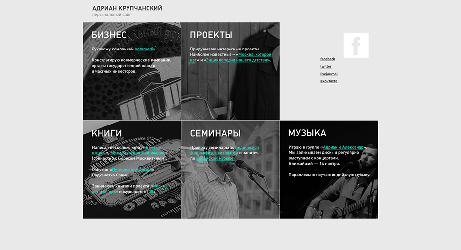
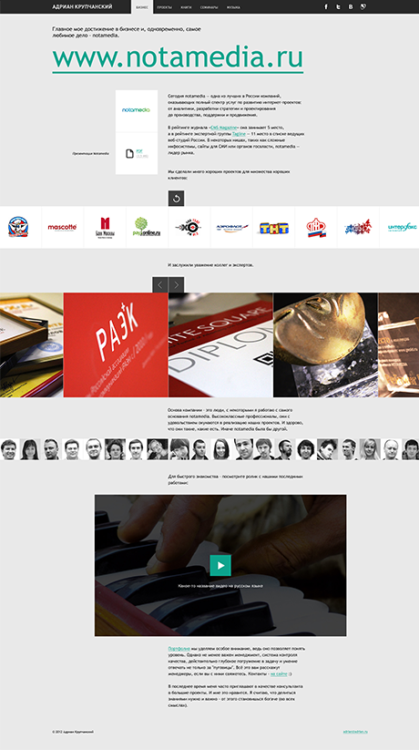
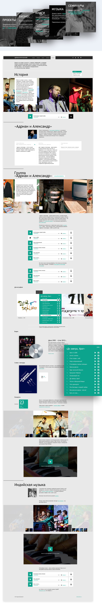
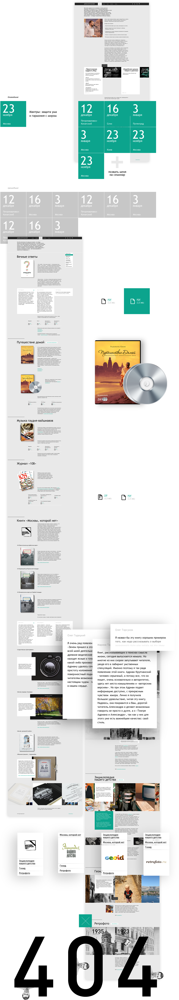
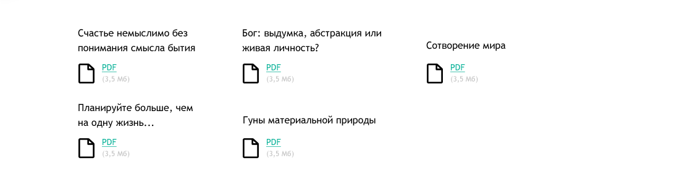

Портфолио
Сайт Адриана Крупчанского
www.adrian.ruКомпания AXELOT работает на рынке информационных технологий с 1998 года. Основная область деятельности AXELOT — разработка и внедрение автоматизированных систем управления различными участками деятельности. Клиентами компании являются организации различных размеров, форм собственности и отраслевой принадлежности.



Быть ли нам...



Другие работы для ProMediaGroup:
- Разработка логотипа
- Набор наклеек
- Фирменный стиль
- Менеджмент:
-
- Дима Харченков
- Влад Карицкий
- Гурам Бердзенишвили
- Арт-директор:
-
- Максим Павлов
- Дизайн:
-
- Мария Колокова
- Денис Шепелев
- Фотограф:
-
- Георгий Ростомов
- Верстка:
-
- Андрей Баранов
- Алиев Рамиль
- Разработка:
-
- Игорь Цупко
Сайт политика у нас в стране, как правило, достаточно грустное зрелище. Фотография персоны, снятая на мыльницу за большим лакированным столом, флаг где-то в хедере сайта, чтобы добавить патриотичности, и много плохо сверстанного текста, написанного явно не для читателей.
Сайт политика у нас в стране, как правило, достаточно грустное зрелище. Фотография персоны, снятая на мыльницу за большим лакированным столом, флаг где-то в хедере сайта, чтобы добавить патриотичности, и много плохо сверстанного текста, написанного явно не для читателей.